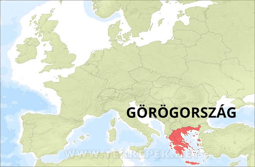

Görögország Európa délkeleti részén fekszik, négy országgal határos: Albániával, Macedóniával, Bulgáriával és Törökországgal. Területe egyrészt szárazföldi kiterjedésű, másrészt több sziget is tartozik hozzá, hiszen több tenger is határolja: az Égei- a Jón- a Földközi- és a Trák-tenger. Görögország domborzata nagyjából egységes terület, hiszen csaknem négyötöde hegyvidék, melynek nagy része magashegység, ami azt jelenti, hogy 1500 méternél magasabb a fekvése. Görögország északi részén erdőség is található, a legtöbb helyen azonban mára már csak csupasz mészkősziklák vannak. Görögország éghajlata egyértelműen mediterrán, azaz forró, száraz nyár, és hűvös tél jellemzi.
